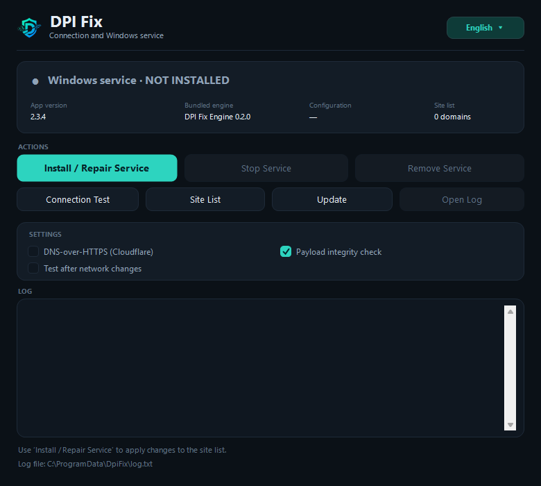

Windows
Desktop app with an installer, connection checks and a background service.
Release notesManage a list of domains, test connectivity and run DPI Fix as a background service.

Desktop app with an installer, connection checks and a background service.
Release notesExperimental systemd helper for a separately installed nfqws engine.
Setup guideExperimental launchd helper for a local SOCKS proxy with ByeDPI.
Setup guideStop the service and test the same site again. Use the connection test and attach the relevant log when reporting an issue.
Results depend on your network and provider. The Windows installer checks a sample of sites before keeping a configuration.
Open Installed apps in Windows Settings, select DPI Fix and choose Uninstall.